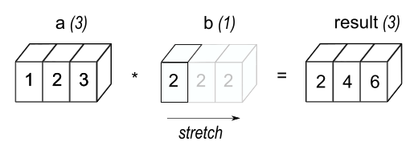

dm701
Table of Contents
1. Github repositories
2. Machine learning and deep learning
2.1. General
2.1.1. Elementwise operations
In elementwise operations like addition, subtraction, and division,
values that correspond positionally are combined to produce a new
tensor. The first value in tensor A is paired with the first value
in tensor B. The second value is paired with the second, and so
on. This means the tensors must have equal dimensions (i.e. equal
shapes) in order to complete the operation.

Figure 1: Elementwise operation
Source: ML-cheatsheets
2.1.2. Hadamard product
According to wikipedia, the Hadamard product (also known as element wise product) is an operation which takes in two matrices of the same shape and returns a matrix of the multiplied corresponding elements.
2.1.3. Tensor broadcasting
According to numpy, tensor operations are usually done on pairs of tensors on an element-by-element basis. In the simplest case, the two tensors must have the exact same shape. For example:
(* [1.0 2.0 3.0] [2.0 2.0 2.0])
will return:
[2.0 4.0 6.0]
Broadcasting rules can relax these constraints when the tensors' shapes meet certain constraints. The simplest broadcasting example occurs when a tensor and a scalar are combined in an operation:
(* [1.0 2.0 3.0] 2.0)
returns:
[2.0 4.0 6.0]
We can think of the scalar being stretched during the arithmetic operation, into a tensor the same shape as the first one. The new elements in the stretched tensor are just copies of the original scalar.

Figure 2: In the simplest example of broadcasting, the scalar b is stretched to become an array of same shape as a so the shapes are compatible for element-by-element multiplication. Source Numpy
2.2. Little learner
This section is a series of notes about machine learning and deep learning in the context of the book "The Little Learner: A straight line to deep learning" by Daniel P. Friedman and Anurag Mendhekar.
2.2.1. Functions
2.2.1.1. Expectant and objective functions
A function invocation such as:
(l2-loss line)
which in a "same-as" chart transcribes as:
(lambda (xs ys)
(lambda (theta)
(let ((pred-ys ((line xs) theta)))
(sum
(sqr
(- ys pred-ys)))))
produces another function. This function which is produced when l2-loss is invoked with a target function (line in this case), is referred to as an expectant function. This is because it is expecting a data set as arguments.
When an expectant function receives a data set, for example:
((l2-loss line) line-xs line-ys)
which in a "same-as" chart transcribes as:
(lambda (theta)
(let ((pred-ys ((line line-xs) theta)))
(sum
(sqr
(- line-ys pred-ys)))))
produces a function which awaits a theta. The name of the produced function is known as an objective function. When provided with a theta, the objective function returns a scalar representing the loss, which is a measure of how far away we are from the well fitted theta.
The objective function would be called as such:
(((l2-loss line) line-xs line-ys) (list 0.0 0.0))
2.2.1.2. Extended functions
In the context of this book, some functions were built to work on both scalars and tensors. They are referred as extended functions.
For instance, the function:+
is one of them.
Other functions that work with scalars can be extended similarly.In its "regular" (i.e. non-extended) way, the function + works as such:
(+ 1 1) 5
However, because + is built using extension it can also work on tensors:
(+ [2] [7]) [9]
here is a "same-as" chart to illustrate how this results in [9]:
(+ [2] [7]) [(+ 2 7)] [9]
When there is a function invocation like + on tensors, we look inside those tensors to determine the invocation's final value.
Here is another example:
(+ [5 6 7] [2 0 1])
transcribes as:
[(+ 5 2) (+ 6 0) (+ 7 1)]
and results in:
[7 6 8]
It's as if + descends into its tensor1 arguments to results in another tensor1. The last step results in the tensor1 of the values of the three sums.
We can also add 2 tensors2 of the same shape, for instance:
(+ [[4 6 7] [2 0 1]] [[1 2 2] [6 3 1]])
transcribes as:
[(+ [4 6 7] [1 2 2]) (+ [2 0 1] [6 3 1])] [[(+ 4 1) (+ 6 2) (+ 7 2)] [(+ 2 6) (+ 0 3) (+ 1 1)]]
and results in:
[[5 8 9] [8 3 2]]
The authors then go on to explain that tensors must be of the same shape before they can be added together, and that getting functions such as + to work on tensors of arbitrary ranks is known as pointwise extension. This however seems to be more commonly known as elementwise operations.
The point by the authors that tensors must have the same shape before computation can be performed on them is, later in the text, contradicted and unfortunately not very well explained. Nevertheless we are shown that the following operation can actually be performed on tensors:
(+ 4 [3 6 5])
by doing this:
[(+ 4 3) (+ 4 6) (+ 4 5)]
which results in:
[7 10 9]
Another example given is:
(+ [6 9 1] [[4 3 8] [7 4 7]])
and in this case, we can look inside the tensor2 argument and add the tensor1 argument just as we did in the previous addition:
[(+ [6 9 1] [4 3 8]) (+ [6 9 1] [7 4 7])] [[(+ 6 4) (+ 9 3) (+ 1 8)] [(+ 6 7) (+ 9 4) (+ 1 7)]]
which results in:
[[10 12 9] [13 13 8]]
This is in fact called tensor broadcasting.
The reader is subsequently introduced to the extended version of:
*
with the following operation:
(* [[4 6 5] [6 9 7]] 3)
and these are the steps:
[(* [4 6 5] 3) (* [6 9 7] 3)] [[(* 4 3) (* 6 3) (* 5 3)] [(* 6 3) (* 9 3) (* 7 3)]]
which returns:
[[12 18 15] [18 27 14]]
We are told that this is the Hadamard multiplication.
Upon further research this does not appear to fit the definition of the Hadamard multiplication, or rather Hadamard product, but a simple tensor to scalar multiplication which involves broadcasting.Other extended functions such as:
sqrt
descend into tensors. In the case of a tensor1, this is how sqrt works:
(sqrt [9 16 25]) [(sqrt 9) (sqrt 16) (sqrt 25)]
which returns:
[3 4 5]
In the case of a tensor2, it works this way:
(sqrt [[49 81 16] [64 25 36]]) [(sqrt [[49 81 16]]) (sqrt [[64 25 36]])] [[(sqrt 49) (sqrt 81) (sqrt 16)] [(sqrt 64) (sqrt 25) (sqrt 36)]]
and this results in:
[[7 9 4] [8 5 6]]
In other words, the function descends inside each tensor1 until it finds a tensor0 at which point it gets their square root.
However, not all extended functions descend until they find scalars. The functionsum
which extends the function
sum-1
descends into its argument until it finds a tensor1 instead of a tensor0.
This is how sum-1 is defined:(define sum1 (lambda (t) (summed t (sub1 ) 0.0))) (define summed (lambda (t i a) (cond ((zero? i) (+ (tref t 0) a)) (else (summed t (sub1 i) (+ (tref t i) a))))))And this is how it behaves:
(sum-1 [10.0 12.0 14.0])
which returns:
32
Here's sum working on a tensor3:
(sum [[[1 2] [3 4]] [[5 6] [7 8]]]) [(sum [[1 2] [3 4]]) (sum [[5 6] [7 8]])] [[(sum-1 [1 2]) (sum-1 [3 4])] [(sum-1 [5 6]) (sum-1 [7 8])]]
which results in:
[[3 7] [11 15]]
What can be noted about the rank of the resulting tensor is that it is one rank less than the rank of the input. In this case the input tensor was rank 3 and the output tensor is rank 2.
2.2.1.3. Parameterized functions
Functions such as:
(define line
(lambda (x)
(lambda (theta)
(+ (* (ref theta 0) x) (ref theta 1)))))
are known as parameterized functions.
Parameterized functions are used where we must figure out the right values for the parameters (here, theta 0 and theta 1) from given values of x and the corresponding values of y.
In this case when line is invoked, for example, with the argument 8 as such:
(line 8)
we can say that it is waiting to accept arguments for its parameters theta 0 and theta 1.
Another thing to note is that when (line 8) is invoked on theta 0 and theta 1 as such:
((line 8) 4 6)
we can then determine y.
2.2.2. Gradients
Gradient short definition
A gradient is a general way of understanding the rate of change of a parameterized function with respect to all its parameters.
Gradient fancy name
The gradient is a fancy word for derivative, or the rate of change of a function.
The term "gradient" is typically used for functions with several inputs and a single output (a scalar field). Yes, you can say a line has a gradient (its slope), but using "gradient" for single-variable functions is unnecessarily confusing.
Gradient-of function short explanation
The result of the "gradient-of" function is a list of gradients of the objective function f with respect to each parameter in theta, and is referred to as the gradient list.
2.2.3. Rate of change
Rate of change short definition
The rate of change of a function (of the objective function in most cases), such as:
((l2-loss line) line-xs line-ys)
determines how its result changes when its argument (i.e. theta) is revised.
The rate of change is also known as the derivative.
A more concrete example of this would be to invoke an objective function as such:
(((l2-loss line) line-xs line-ys) (list 0.0 0.0))
which would achieve the objective of finding a well-fitted theta by returning the loss for this particular theta.
If the returned loss was, for instance, 33.21, we would test the behaviour of "theta 0" to see how we should revise it. We then change "theta 0" by increasing it a small amount for testing purposes, so that our new "theta 0 is" 0.0099. If the loss goes down, for instance, to 32.59, we are slightly closer to our ideal loss. In other words we changed the loss by:
(32.59 - 33.21) = -0.62
Now that increasing our "theta 0" by 0.0099 has changed our loss by -0.62 we would say that our rate of change is:
-0.62 / 0.0099 = -62.63
Rate of change calculation
The rate of change is determined by subtracting the old (which so far has been greater) loss from the new (which so far has been smaller) loss, and in our examples so far this has resulted in negative values.
Using the rate of change
Increasing theta from 0.0 by a small value can result in a rate of change which has a large absolute value, meaning that a small increase in theta causes a relatively large decrease in its loss.
This idea can be used to determine how much further to revise theta so as to achieve a bigger loss. However we should be wary that the revision of theta moves us closer but does not overshoot the ideal loss.
This problem can be resolved by taking a small scalar (like 0.01), and multiply the rate of change by it and revise our theta by that amount.
This small scalar is known as the learning rate.
Theta revision after finding the rate of change
The rate of change is multiplied by alpha (the learning rate) and the returned (negative) value used to update/revise theta by subtracting from theta this negative value (which has resulted in a positive revision of theta so far).
The rate of change cannot be reused as it depends on the current theta.
2.2.4. RMSProp
RMSProp short definition
This algorithm works by modifying the fraction of the gradient used at each revision.
Since our alpha so far has been a constant, we know that it causes the velocity of the gradient descent to slow down in a similar way.
Because alpha represents the fraction of the gradient we're going to use as our velocity, another approach to addressing this problem is to make this fraction adaptive. Adaptive here means that the fraction is decided based on the gradient and its historical values.
RMSProp reason for squaring gradient in smooth invocation The gradient g can be negative, and if we get too many consecutive negative gradients, then our historical averages can themselves become negative.
This is a problem because r gets used by the modifier" G i.e.
(+ (sqrt r) epsilon)
and its being negative can make alpha-hat (i.e. the learning rate) negative. When that happens, we end up ascending the gradient instead of descending it.
This means that we would move our theta in a direction that increases the loss instead of a direction that decreases the loss.
2.2.5. Tensors
Here is a tensor1. A tensor1 has only scalars and groups scalars together:
[5.0 7.18 3.1416]
A tensor2 can be thought of as a matrix or a two-dimensional array. The elements of a tensor2 are tensors1, for example:
[[7 6 2 5] [3 8 6 9] [9 4 6 5]]
has 3 elements:
[7 6 2 5] [3 8 6 9]
and:
[9 4 6 5]
Therefore if we have a tensor whose elements are tensorsm, that makes it a tensorm+1. One condition however is that all the tensorsm must have the same numbers of elements.
A scalar such as:
9
is also a tensor. It is a tensor0, but zero-dimensional arrays are rarely mentioned.
2.2.5.1. Tensor rank
The above superscripts have a name, they are known as the rank of the tensor. The rank of a tensor tells us how deeply nested its elements are. For instance, here is a tensor3:
[[[8 9] [4 7]]]
this is because it has 1 tensor2 element that has 2 tensor1 elements of 2 scalars each.
In any given tensor, the nested tensors have the same number of elements. For example, the nested tensors of tensors2 are all tensors1, and each of those tensors1 has the same number of tensors0.
This means that the tensorsm that are elements of a tensorm+1 have the same shape.
2.2.5.2. Tensor shape
The shape of:
[[5.2 6.3 8.0] [6.9 7.1 0.5]]
is this list of positive natural numbers:
(list 2 3)
because it is a tensor2 of 2 tensors1, each of which has 3 tensors0 elements.
The shape of:
[[[5] [6] [8]] [[7] [9] [5]]]
is:
(list 2 3 1)
It is:
- a tensor3 of 2 tensor2 elements.
- Each of those tensor2 has 3 tensor1 elements.
- Each of those tensor1 has 1 tensor0 element, which is a scalar.
- Another useful thing to note is that the rank of a tensor is equal to the length of its shape.
2.2.6. Update of parameters
The following function:
(define naked-u
(lambda (P g)
(− P (* alpha g))))
updates the parameters by multiplying the gradient g by the learning rate alpha, and subtracts the result from the parameter P to yield the next P, so that ultimately we get closer to a well-fitted theta.
2.2.7. Velocity
Velocity of descent short definition
The change that we make to a given parameter at each revision is known as the velocity of descent.
In the following expression:
(define naked-u (lambda (P g) (− P (* alpha g))))since we subtract (* alpha g), the change to P, (i.e., the velocity) is:
(− (* alpha g))
Velocity of descent slowing concept
We can observe from a loss graph with tangents, that as each tangent approaches the lowest point on a graph, they get less and less steep towards the bottom of the curve i.e. their slope (the gradient) gets smaller.
In fact, as the curve's bottom is approached, the gradient gets closer and closer to 0.0.
What happens when we multiply a really small gradient with a really small learning rate as we do:
(* alpha g)
in update functions is that we get something even smaller. So at each revision closer to the bottom, the amount of change to each parameter gets smaller and smaller.
Therefore we can say the velocity of descent slows down as we approach the bottom of the curve.
Velocity of descent speed up concept
The problem of the velocity of descent slowing down can be remedied by boosting our velocity. This is achieved by adding some fraction mu of the velocity v, of the previous revision, to the change we expect to make in the current revision.
Therefore our velocity which was:
(− (* alpha g))
becomes:
(+ (* mu v) (- (* alpha g)))
which is better written as:
(- (* mu v) (* alpha g))
Here, v represents the velocity of the most recent revision.